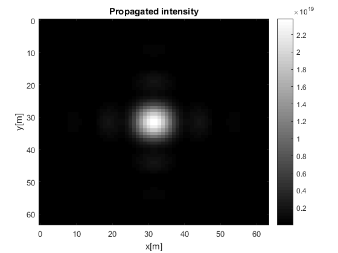
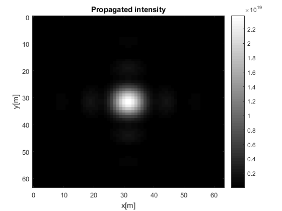

Contents
Example RS_Prop
%%%%%%%%%%%%%%%%%%%%%%%%%%%%%%%%%%%%%%%%%%%%%%%%%%%%%%%%%%%%%%%%%%%%%% % % This function call diferent versions of the Rayleigh Sommerfeld % propagator, the normally programated and a parallel version. % % MEX files are also included, but they are limited to images of 64x64 size % % Parallel pool should bo initialized before running this script % %%%%%%%%%%%%%%%%%%%%%%%%%%%%%%%%%%%%%%%%%%%%%%%%%%%%%%%%%%%%%%%%%%%%%%%
Square aperture
U1 = zeros(64); U1(27:38,27:38) = 1;
Image size
Lx = 1e-3; Ly = 1e-3;
Illumination wavelength
lambda = 532e-9;
Propagation distance
Z = 50e-3;
simple implementation
tic [U2a] = RS_Prop(U1, Lx, Ly, lambda, Z); b(1) = toc;
Parallel implementation
tic [U2b] = RS_Prop_Par(U1, Lx, Ly, lambda, Z); b(2) = toc;
MEX versions
% tic % [U2c] = RS_Prop_mex(U1, Lx, Ly, lambda, Z); % b(3) = toc; % % tic % [U2d] = RS_Prop_Par_mex(U1, Lx, Ly, lambda, Z); % b(4) = toc;
Plot of result
figure, imagesc(Lx,Ly,U1), colorbar, colormap gray, title('Object'), xlabel('x[m]'), ylabel('y[m]') figure, imagesc(Lx,Ly,U2a.*conj(U2a)), colorbar, colormap gray, title('Propagated intensity'), xlabel('x[m]'), ylabel('y[m]')
 
